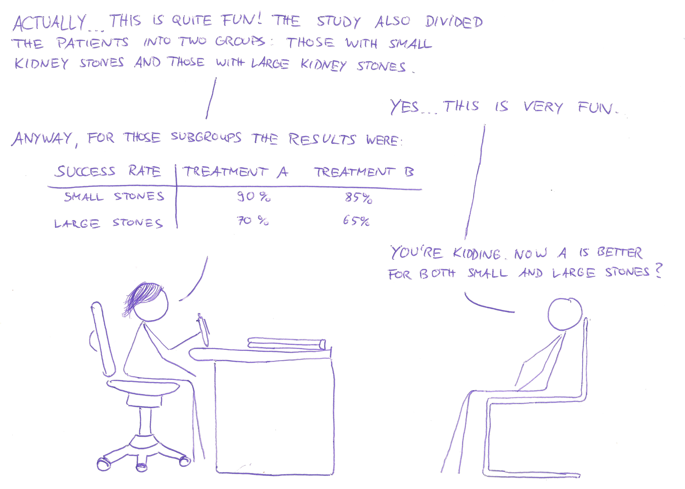
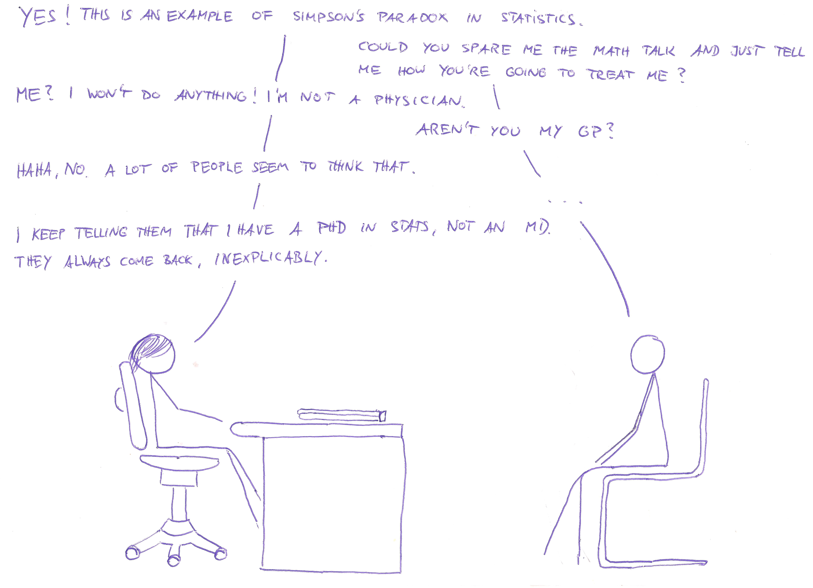

I do not know why you're here, but this is an attempt at an "explorable explanation" of Simpson's paradox in statistics. It is a truly mindboggling phenomenon which is totally elementary in nature but which requires the juggling of multiple conditional probabilities and is famously difficult to unravel (see, for example, Judea Pearl's report "Understanding Simpson’s paradox.")
In this explorable, we will try to gain a deeply intuitive understanding of how Simpson's paradox works and when it happens. There are nice diagrams and animations you can tinker with. Let's dive right in with the following comic.
Imagine seeing your doctor and the following dialogue ensues:
So, Simpson's paradox is essentially the (apparent) contradiction between two tables. We have the following success rates of treating kidney stones with two different treatment methods.
| success rate | treatment A | treatment B |
|---|---|---|
| 76.7% | 81.7% |
but after creating subcategories "patients having small kidney stones" and "patients having large kidney stones" (with every patient being in either one), we get
| success rate | treatment A | treatment B |
|---|---|---|
| small stones | 90% | 85% |
| large stones | 70% | 65% |
In this short explanation we will try to answer the following questions.
We start by looking at some patients like a hospital manager would: Featureless objects lacking personality and history. We even abstract away gender, age and their ice cream preferences.
Keep in mind: Every white square is exactly one patient.
We have 240 patients each treated by A and B. We arrange them nicely in a rectangle 12 by 20, like so:
Some patients have small kidney stones and some have large ones.
Hover over the following items to see an effect.
How good is each treatment for any subgroup?
We can see the following things (hover over items to see effects):
This is what constitutes Simpson's paradox: Although the success rates in each subpopulation are better for treatment A, the combined success rate is better for treatment B.
How did this happen? We can think about it like this:
We can now revisit our original question and answer them:
A study found that sailors gone overboard were more likely to be rescued if the weather was bad. This is totally unintuitive as good weather implies better visibility conditions and easier lifesaving.
If we condition on an additional variable, "sailor wearing/not wearing a life vest", the relation reverses: For both sailors without a life jacket and those wearing a life jackets, chances of rescue were higher in good weather than in bad weather (as would be expected). If you think that Simpson's paradox might again be responsible for that, you would be right.
Let's explore what happens here.
We have fixed the rescue probabilities with and without life vest in good and bad weather, so you have only two parameters to fiddle with: The fraction of sailors donning a life jacket in good resp. bad weather.
Note that from here on, we do not visualize individuals (which were the small squares in the figures above), but use fractions and percentages. If it helps you, think of each pixel as an individual sailor (although there may be some minor roundoff errors in this case)
Explore: Try to choose those parameters in such a way that the compound ratio of sailors saved in good weather is actually worse than in bad weather (indicators for this are below the figure).
| Fraction of sailors donning life vest | ||
| Rescue probability with life vest | ||
| Rescue probability without life vest |
| Fraction of sailors donning life vest | ||
| Rescue probability with life vest | ||
| Rescue probability without life vest |
| Total rescue probability in good weather: | |
| Total rescue probability in bad weather: |
In the last two examples (i.e. kidney stones and sailors in distress), we were confronted with conflicting information: Treatment A was better for each subcategory of kidney stones but treatment B was better overall. Any given sailor (wearing a life vest or not) was more likely to be rescued in good weather but overall they were less likely to be saved in good weather.
Statistics is not only done for describing what is but often also for providing decision guidance: A patient with kidney stones trying to decide whether to pick treatment A or B would like to have a helpful statistical study giving some clue on which will most likely work better.
This means that she has to choose whether to "trust" the statistics with more detailed information (i.e. specified to a kidney stone size or weather conditions) or the one with ignored information (which ignored subcategories). In both examples it made more sense to use the statistics with more information: We were interested in individual welfare, i.e. the recovery probability of each patient and the survival chances of each sailor. As every individual person is in a specific category (kidney stone size or weather condition), we had to choose the statistics which considered this piece of information.
Now of course, "trusting" a statistics does not make any sense; both statistics are fully correct, but one is misleading for a decision maker.
Now we need to be careful not to generalize this. "More information" is not necessarily better. We can construct an example of Simpson's paradox where it makes more sense to trust the statistics ignoring subcategories.
We put ourselves in the shoes of someone tempted by a choice of cake: A juicy carrot cake and a delicious melty chocolate cake. He is supposed to be watching his weight so he would like to minimize the amount of fat he will ingest. Luckily, the cafe has provided a helpful chart depicting the fat content of each cake, even broken down on the two components of both cakes, batter and frosting.
Our guy can see that both batter and frosting of the carrot cake have a lower proportion of fat than the chocolate cake's batter and frosting. But overall, the carrot cake has a higher percentage of fat: The carrot cake contains 33%*75% + 67%*21% = 39% fat, while the chocolate cake contains 10%*90%+90%*30% = 36% fat. Now obviously, the correct choice (at least with respect to avoiding fat) would be the chocolate cake. The "statistics with more information", i.e. the one considering each subcategory, is the misleading one in this context.
We consider a generic university being sued for discrimination of female applicants for their graduate programs. For simplicity we assume the university only has programs in mathematics and chemistry.
Let's say the university's administration actually finds that overall, male applicants are accepted with a higher probability than female applicants. The university president gives a stern talking to to both the chemistry and the maths department heads but both claim that their respective programs are actually slightly biased in favor of female applicants.
By now you probably are already an expert in how this works.
Exploration: Set the parameters such that female applicants are seemingly discriminated against.Try to achieve the following:
Use your intuition from the last examples to see how this could happen and set the parameters accordingly.
| Fraction of applicants applying for math | ||
| Acceptance probability in math | ||
| Acceptance probability in chemistry |
| Fraction of applicants applying for math | ||
| Acceptance probability in math | ||
| Acceptance probability in chemistry |
| Total acceptance probability for female applicants: | |
| Total acceptance probability for male applicants: |
I had the idea for this explorable after reading Michael Nielsen's wonderful essay Reinventing explanation. He also suggested to use an "emotional situation" where we can empathize with the characters being confronted with Simpson's paradox. This is the reason for the goofy introductory comic which may look like a poor imitation of Randall Munroe's style of drawing (which it is). After reading Too Many Words by Christopher Walker I tried to cut down on text accompanying figures.
All the examples are either standard examples for Simpson's paradox (see the corresponding Wikipedia page) or my own concoction. Although some examples are similar to known real-world examples, all concrete numbers used are entirely artificial (mostly in order to be able to work with nicer numbers).
I had to learn HTML, Java Script and D3 from scratch in order to implement the kind of interactive diagrams I had in mind. So, please, for the love of god, do not look at the source code. It is badly hacked together and reprehensibly badly commented.
There is a lot of room for improvement in this explorable, e.g. better reactive highlighting, or maybe some more comic panels interspersed with the rest of the document which continue the story of our stats lady and her "patient". It would also make sense to think about causality in the form of graphical networks (as described in Judea Pearl, "Causal inference in statistics: An overview") but this would make the text a lot longer (maybe this could be part 2?). If you have any remarks, questions, suggestions for improvement and/or would like to complain on me sucking at drawing, please comment below.